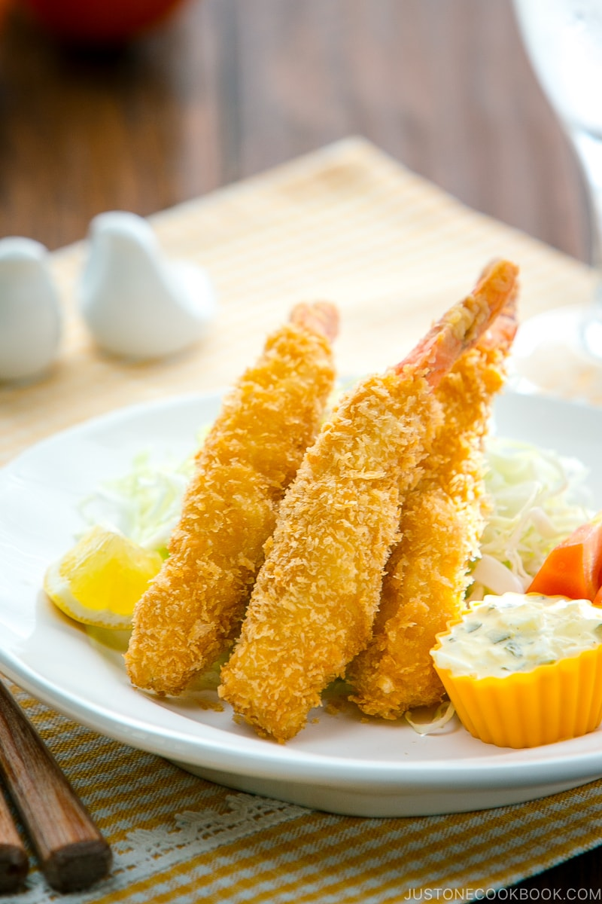

Ebi Fry

These deep-fried shrimp are coated with crispy panko crumbs to make the easiest, tastiest deep-fried shrimp ever!
Ingredients
- 1 lb prawn
- salt
- black Pepper
- 1/2 cup all-purpose flour
- 3 large eggs
- 2 cups panko (Japanese breadcrumbs)
- 4 cups oil
Tartar Sauce
- 2 large eggs
- 1/4 onion
- 1 pickle
- salt
- black Pepper
- 1/2 lemon
- 4 tbsp japanese mayonnaise
Steps:
To create the tartar sauce:
- Boil the Eggs. Make sure to cover the eggs with water. Bring the water to a boil and rotate the eggs with chopsticks or spoon.
- Dice the onions and soak it in cold water for 10 mins.
- Finely chop the pickles.
- Drain the onion after 10 mins.
- In a bowl, break the eggs into small pieces using a fork.
- Add the pickles, onions, salt, and pepper then squeeze some lemon juice.
- Finally, add the mayonnaise and mix all together. Cover and set aside in the fridge.
To create the Ebi Fry
- Season the prawn with salt and pepper.
- Dredge the prawns with flour, and then beaten egg. Double dredge with flour and egg and then dredge in panko.
- Shake off the excess.
- Heat oil to 180 degrees celcius or 350 degrees fahrenheit.
- Put 2-3 prawns and deep fry them for about 2 and a half minutes or until golden brown. Transfer to a wire rack or paper towel to dry off excess oil.
- Between batches, make sure to scoop up breadcrumbs to keep the oil clean.
Go back